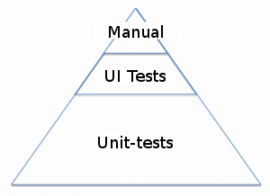

The Fast and the Continuous


About me
Software developerCodeborne
DevClub.eu
organizer
organizer
Selenide.org
author
author
Agenda
- 100% test coverage
- Unit vs UI tests
- Selenide
- Demo
100% test coverage
Tutorial:100% is not possible.80% is good enough. |
Bob Martin:100% is the goal!80%? Are your joking? |
100% Coverage
- 100% Coverage is not enough!
- 100% Coverage is overkill
100% Coverage
is not enough!
boolean validateEmail(String email) {
return "[a-z]+@[a-z]+\.[a-z]{2,4}".matches(email);
}
@Test void emailValidation() {
assertTrue(
validateEmail("gmail@chuck.norris"));
}
100% coverage
Should I really test
getters/setters?
public String getFirstName() {
return firstName;
}
public void setFirstName(String firstName) {
this.lastName = firstName;
}
Should I really test
getters/setters?
@Test public void testNames() {
Person chuck = new Person();
chuck.setFirstName("Chuck");
assertEquals("Chuck", chuck.getFirstName());
}
Overkill?
How to find compromise:
- Not too much, and
- not too few of tests?
Testing pyramid
Codeborne
Developers write BOTHunit- and UI-tests
Codeborne
- All tests are in same repo
- Write tests like code
- Our religion is clean code
- We need concise API for UI Tests
Codeborne
Selenium + API = SELENIDE
selenide.org
@Test
public void userCanLogin() {
open("/login");
setValue(By.name("user.name"), "john");
$("#submit").click();
$("#menu", shouldHave(text("Hello, John!")));
}
Demo

Thank you!
andrei.solntsev@gmail.comasolntsev.blogspot.com/